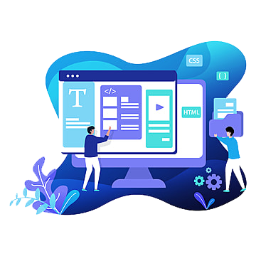
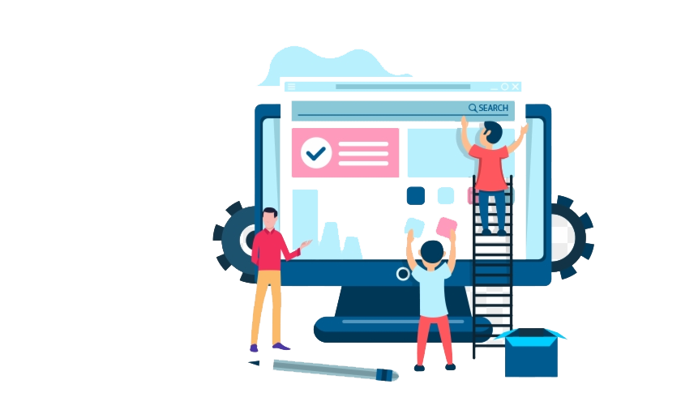

Getting to Know You
Every digital project we take on starts with the discovery step of our approach. This can be as simple as getting to know you, your business and your customers over a cup of tea, to something as complex as delivering a full performance review, competitor analysis and market research report. Either way, taking the time to discover these things about your business and your customers helps us understand what success looks like for you, so we can create something that achieves your digital goals.

Bringing Life to your Brand
Our design process starts by taking everything we’ve learned about your business so far and interpreting this in a creative way to produce initial design concepts, wireframes, responsive layouts and final design mock-ups. Getting the visual elements of your digital project right relies heavily on collaboration so we take the time to have regular conversations and plenty of discussions with you to help shape the final creative vision. Looking good is only half the story though, it has to work well too. We'll map the user flow through your content, consider the specific functionality needed to achieve your goals and make sure your website is easy to use no matter what device it’s being used on.